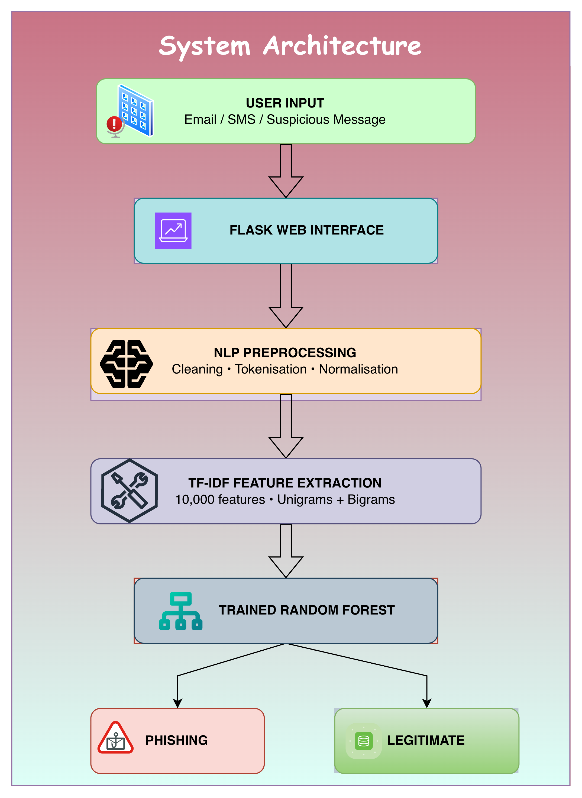
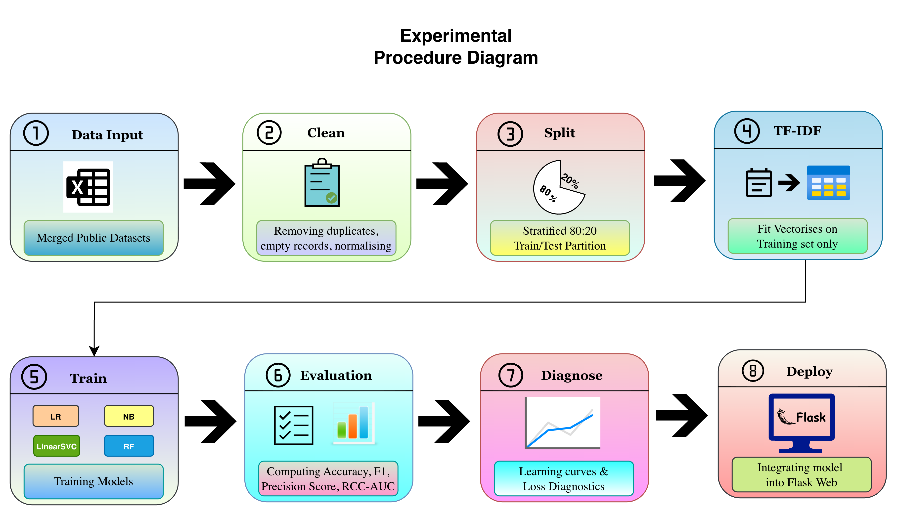
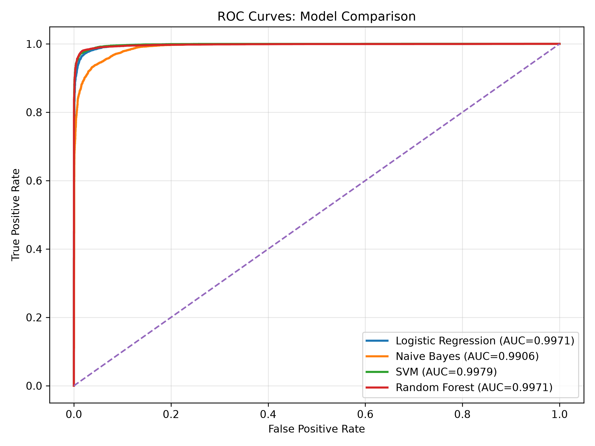
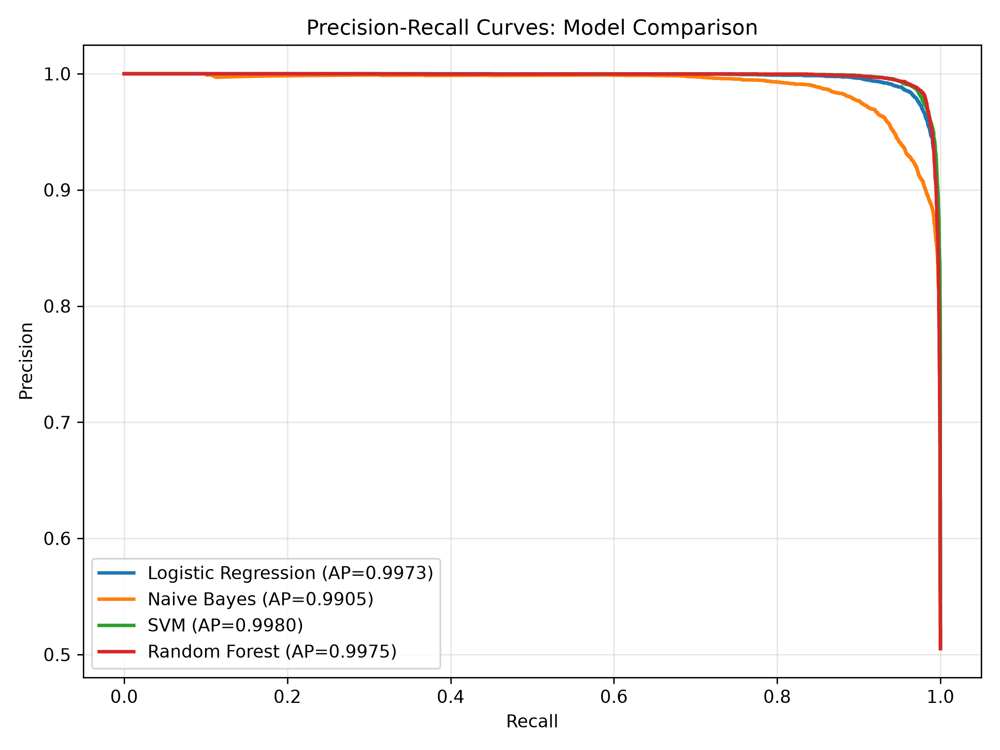
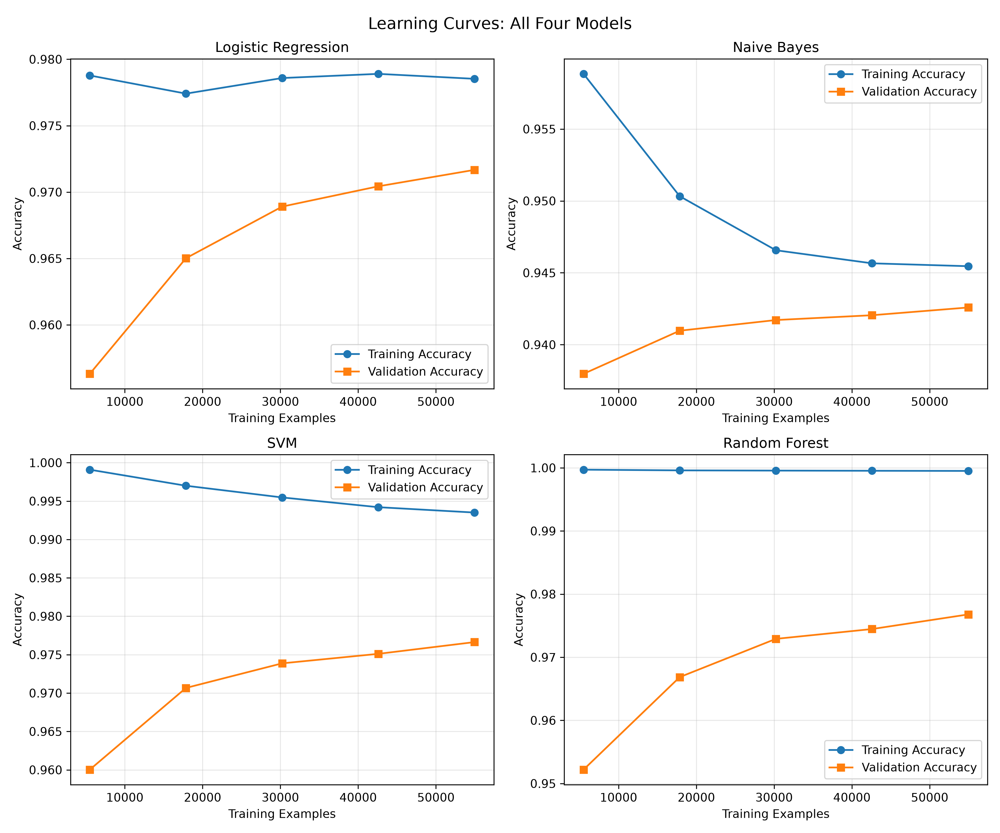
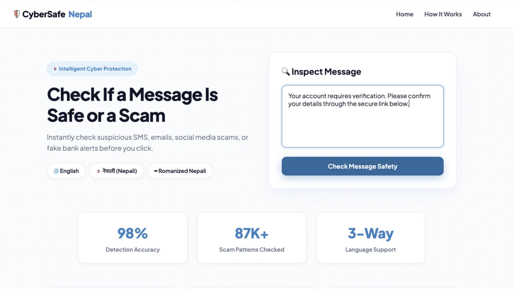

Scammers target victims through emails, text messages, and deceptive links daily.
Existing security tools mainly focus on English, leaving other languages vulnerable.
| Stage | Count / Method |
|---|---|
| Initial Dataset | 87,717 rows |
| After Cleaning | 85,870 rows kept |
| Data Split | 80% Train / 20% Test |
| Sample Count | 68,696 Train / 17,174 Test |
| Feature Setup | TF-IDF (10,000 top words & phrases) |
Text Cleaning Steps: Removed duplicates → normalized text → stripped HTML tags → split into tokens → removed filler words → base word stemming.


Summary: We strictly separated training and testing data to prevent bias. Models were trained purely on training samples before being tested on unseen messages and integrated into a web tool.
Analysis: Decision tree ensembles performed better than simple linear models. Random Forest handled word variations best by using 200 decision trees to classify complex sentences cleanly.
| Model | Accuracy | Precision | Recall | F1-Score | MCC | ROC-AUC | PR-AUC |
|---|---|---|---|---|---|---|---|
| Logistic Regression | 97.43% | 97.66% | 97.24% | 97.45% | 0.9486 | 0.9971 | 0.9973 |
| Naive Bayes | 94.48% | 96.65% | 92.26% | 94.41% | 0.8906 | 0.9906 | 0.9905 |
| SVM | 97.81% | 98.07% | 97.59% | 97.83% | 0.9562 | 0.9979 | 0.9980 |
| Random Forest | 98.06% | 98.57% | 97.58% | 98.07% | 0.9613 | 0.9971 | 0.9975 |
Key Takeaways: Random Forest achieved the best Precision (98.57%) and F1-Score (98.07%), meaning it flagged scams accurately with very few false alarms. SVM showed slightly better overall confidence scoring.


What This Means: The steep curves show that the system catches most phishing messages while rarely mistaking genuine user messages for scams.

Findings: Training and validation curves settled close to each other quickly as dataset size grew, proving the model learned genuine pattern rules instead of just memorizing text.
Trial Results:
Takeaway: Promising early results for cross-language detection, but shows we need more training data written in native Devanagari script.

Features: Allows users to paste suspicious text and instantly view a risk score, clear classification, and key words that triggered the detection.
Combining simple text feature extraction with standard machine learning algorithms provides a fast and highly effective way to spot scams in English and Romanized Nepali, with Random Forest leading at 98.06% overall accuracy.
The misclassified Devanagari samples show that low-resource scripts require custom language processing tools and larger datasets in future updates.